Unidade 2
Vídeo da Apresentação
Slidess
Reuniões e Validações com a Cliente
Abaixo estão os registros, players de gravação e atas das reuniões realizadas com a cliente, documentando a evolução desde a concepção do escopo até a priorização final do MVP.
Revisão e Validação Inicial do Documento de Visão
Objetivo: Validar o problema central, os objetivos e o escopo preliminar do projeto (Iteração 1).
Resumo da Reunião: Nesta primeira validação, a equipe apresentou à cliente o mapeamento inicial do escopo do projeto. A discussão foi centrada no alinhamento das expectativas quanto às necessidades da comunidade Munduruku, validando a premissa de que a aplicação precisa de mecanismos sociais e interativos para reter usuários. Os primeiros tópicos do Documento de Visão foram consolidados.
Alinhamento sobre Capacidade Técnica e Tecnologias
Objetivo: Mapear gargalos técnicos da arquitetura legada (Flask) e validar a capacidade da equipe de propor melhorias estruturais.
Resumo da Reunião: Sessão dedicada ao alinhamento técnico do projeto. A equipe debateu com a cliente o estado atual da base de código, as integrações e as tecnologias empregadas no desenvolvimento original. O objetivo foi assegurar que as novas funcionalidades propostas fossem técnica e arquiteturalmente viáveis antes de avançar para a fase de elaboração dos requisitos detalhados.
Priorização MoSCoW
Validação de Funcionalidades
Objetivo: Demonstrar o fluxo de usabilidade das novas mecânicas de interação (Feed Social e Gamificação) para captura de feedback (Iteração 3).
Resumo da Reunião: Foco na experiência do usuário e na validação das funcionalidades ligadas ao OE1 (Aumentar engajamento). A equipe discutiu as regras de negócio por trás do Feed Social Comunitário (CP2) e dos Mecanismos Interativos (CP1). Foram debatidas as formas de interação (curtidas, comentários) e a estrutura de criação de eventos para garantir que se adequassem à realidade de uso da aldeia.
Validação dos Requisitos Funcionais
Objetivo: Revisão da lista final de 49 Requisitos Funcionais, focando em permissões, segurança e multimídia (Iteração 4).
Resumo da Reunião: Passagem formal pela Especificação Suplementar consolidada. A cliente validou processos críticos do OE2 (Segurança) e OE3 (Experiência). Destaques da validação: * Controle de Usuários e Denúncias (CP3 e CP4): Validação dos fluxos de banimento, alteração de cargos e gestão de denúncias para manter um ambiente seguro. * Multimídia (CP5): Definição estrita de que apenas os usuários com perfil de Professor devem ter o poder de associar vídeos e áudios diretamente às traduções no processo educacional.
Priorização Final e Definição do MVP
Objetivo: Aplicar a Matriz de Quadrantes (Impacto no Negócio vs. Dificuldade Técnica) para estabelecer a Baseline oficial do backlog e definir o escopo do MVP (Iteração 4).
Resumo da Reunião: Nesta sessão de encerramento da Fase de Elaboração, a equipe realizou a priorização do backlog por meio de uma Matriz de Impacto no Negócio vs. Dificuldade Técnica, estabelecendo o escopo do Minimum Viable Product (MVP).
Board do Miro
Matriz de Priorização
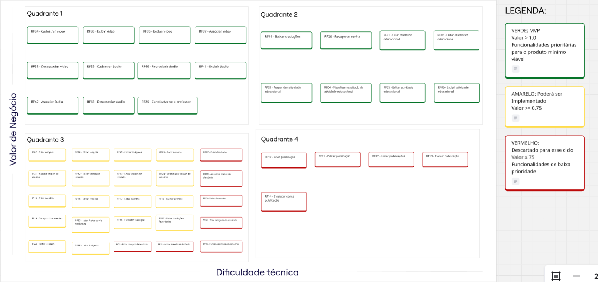
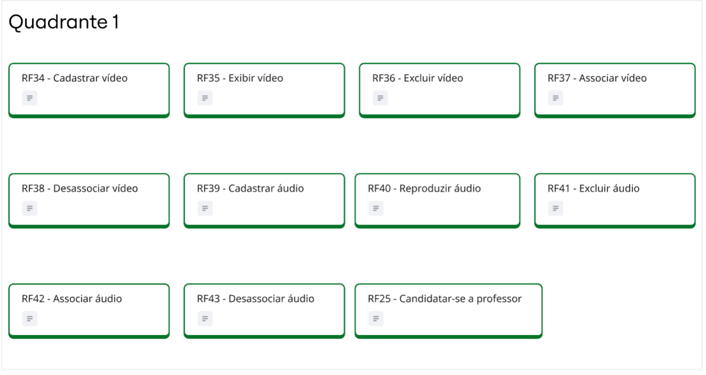
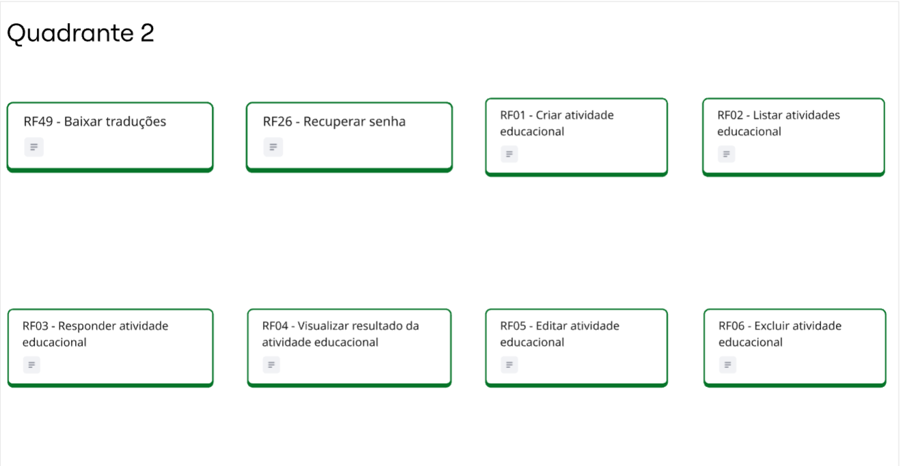
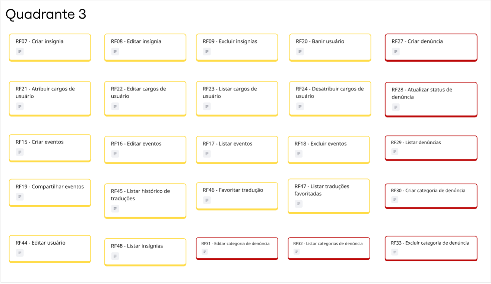
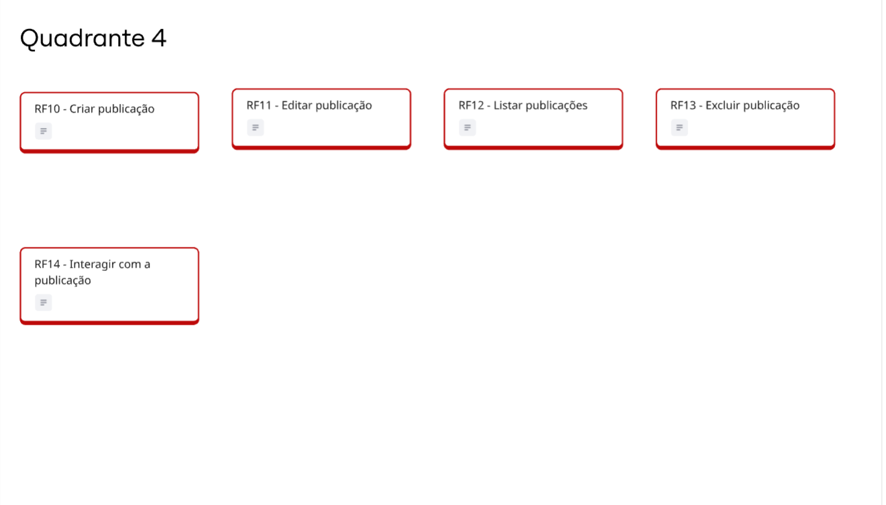
Árvore de Rastreabilidade
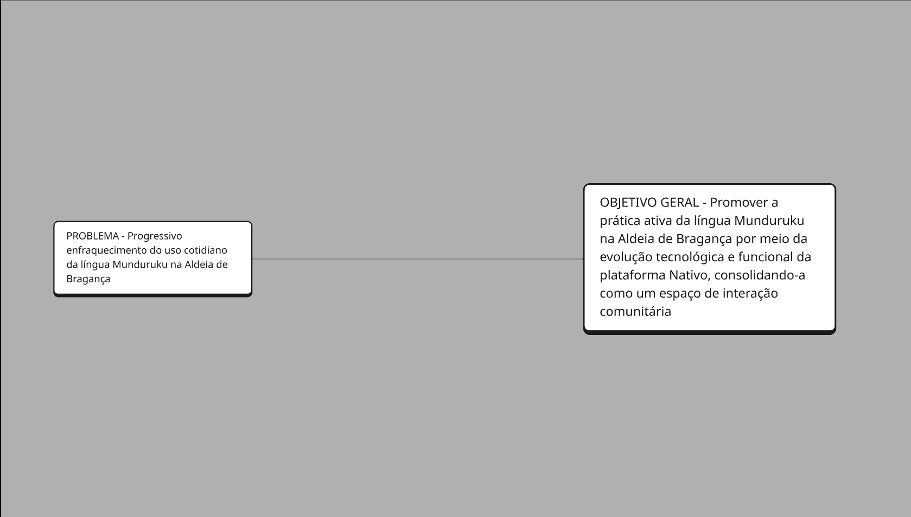
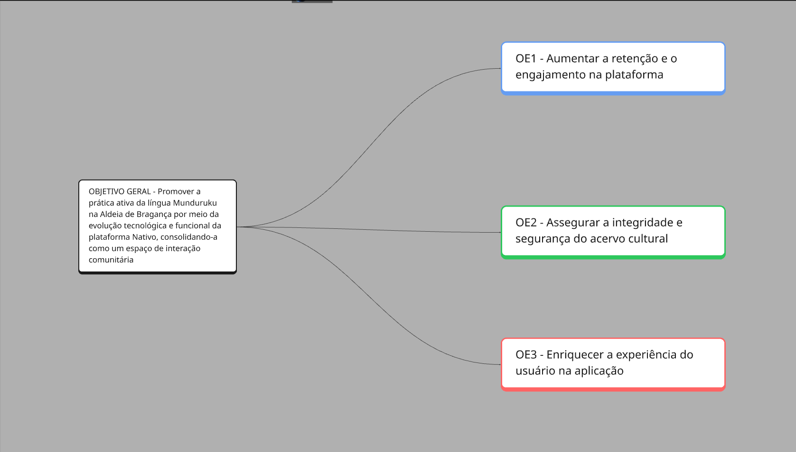
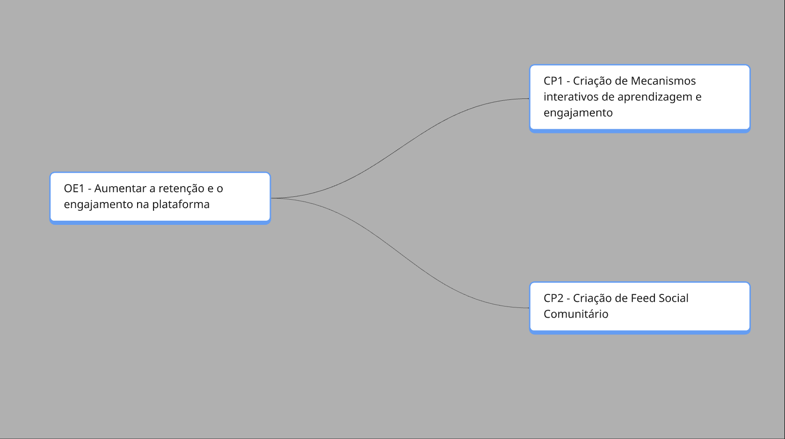
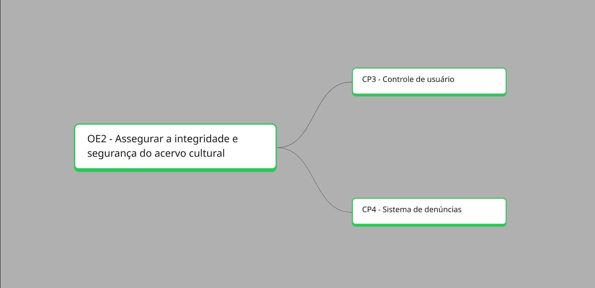
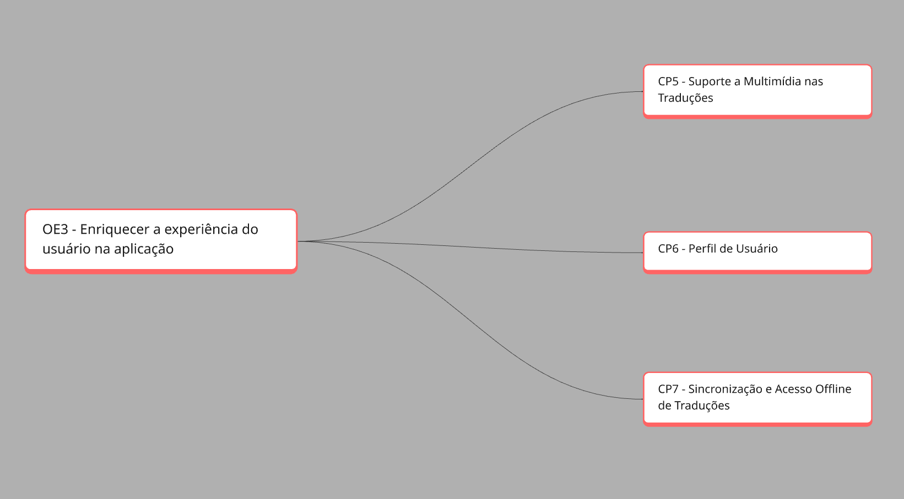
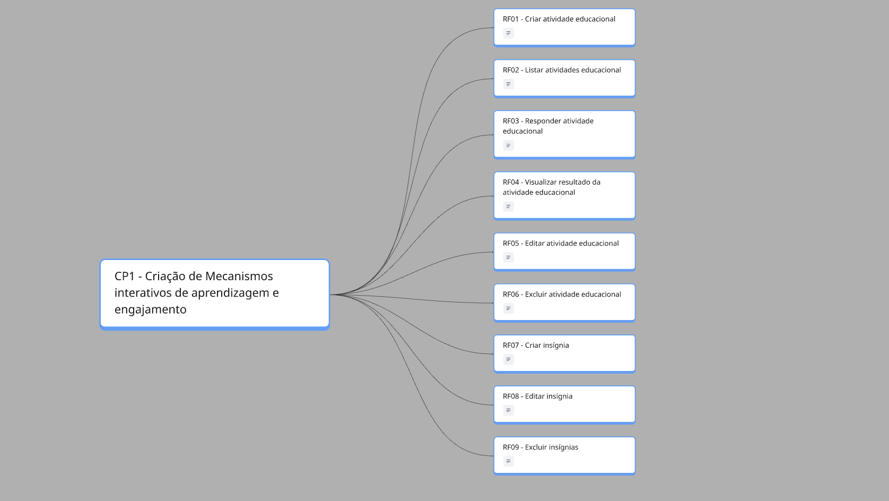
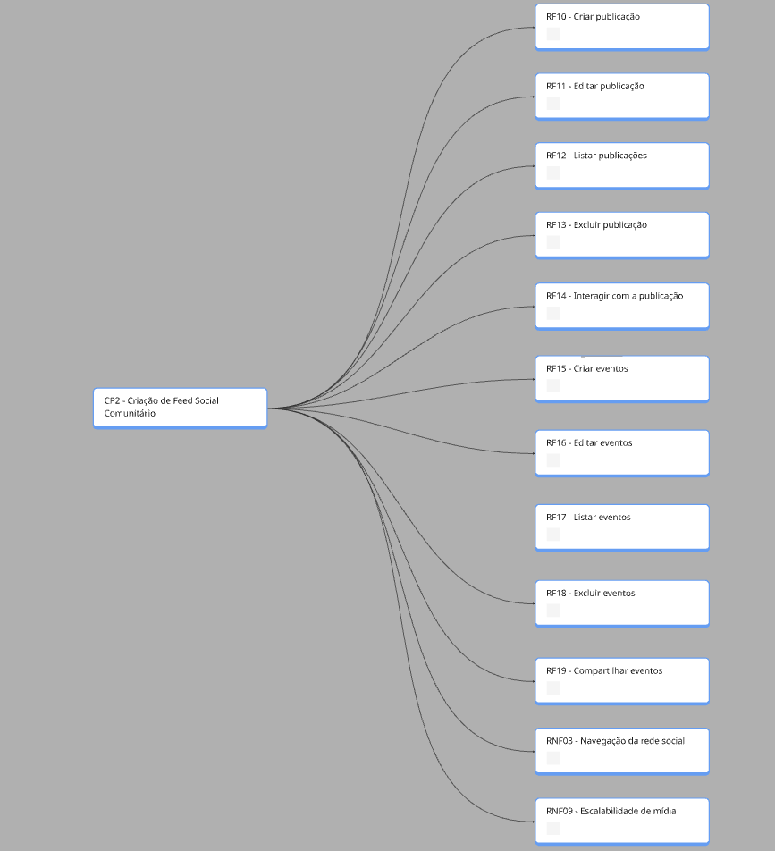
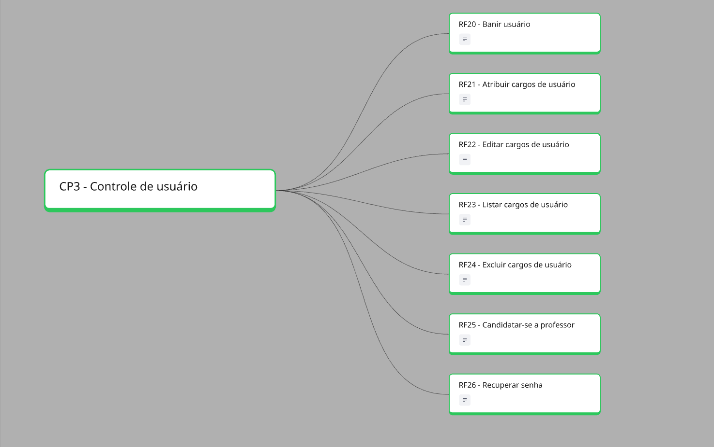
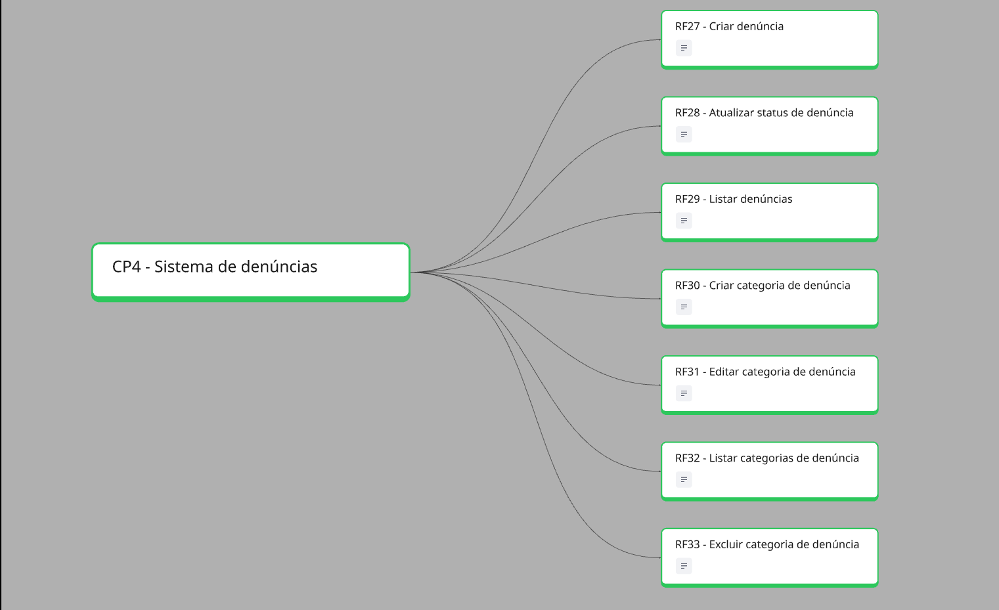
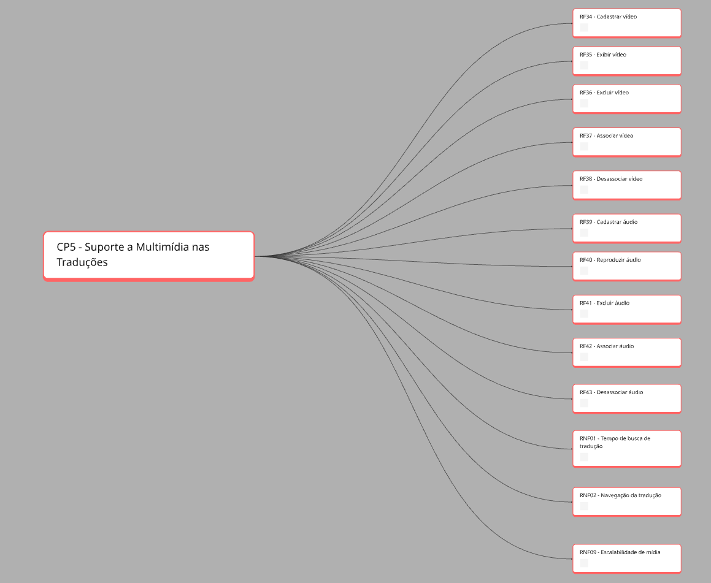
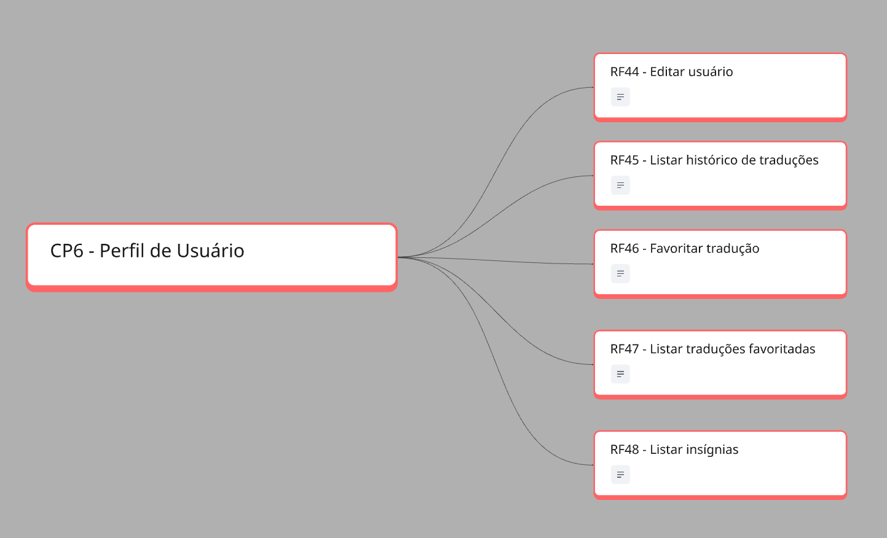
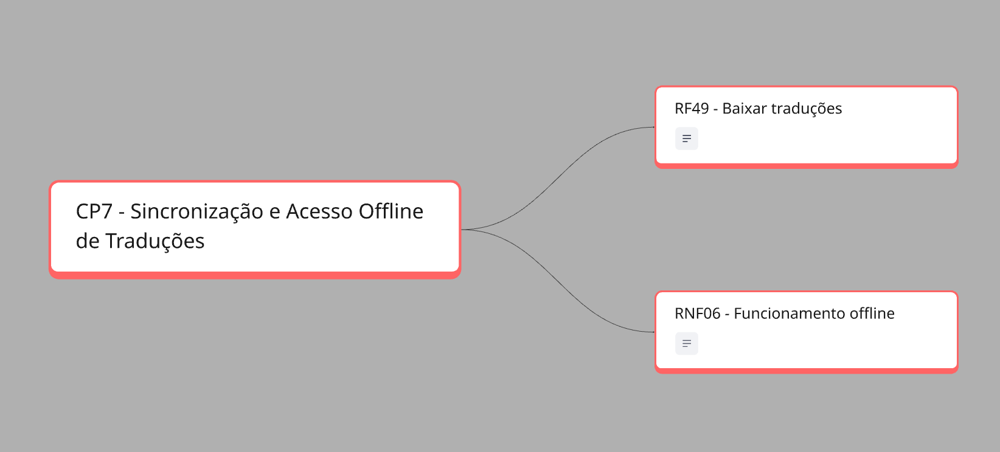